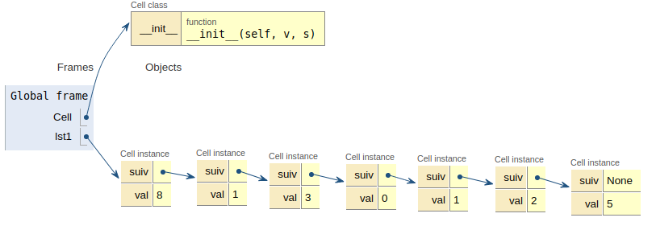

Exercices¶
Recherche dichotomique¶
Donner la séquence des appels à la fonction cherche_dans_tableau pendant les deux évaluations suivantes:
recherche_dichotomique([0,1,1,2,3,5,8,13,21], 13)
recherche_dichotomique([0,1,1,2,3,5,8,13,21], 12)
Diviser¶
Quelles sont les deux listes renvoyées par la fonction coupe_v3 lorsqu’on lui passe la liste suivante:

L’ordre des éléments est-il respecté ?
Est-ce important?
Fusion¶
Réécrire la fonction fusion en utilisant une boucle while.